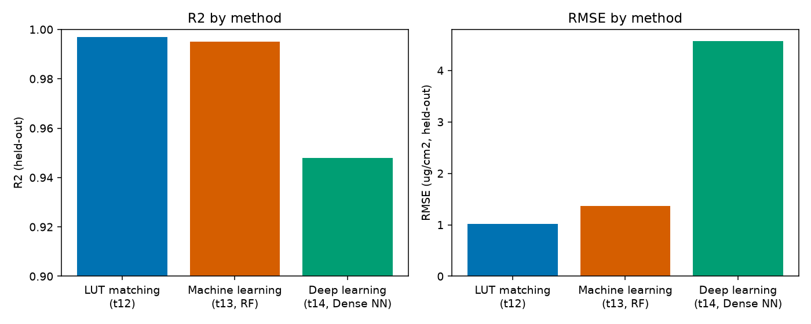

15. Choosing an Inversion Strategy
What you will learn
A direct, at-a-glance comparison of LUT matching, machine learning, and deep learning on the same underlying retrieval problem.
Data requirements, interpretability, and computational cost for each.
Enough to pick a reasonable starting point without re-reading Chapters 12-14 first.
Concept
Method |
Data needed |
Interpretability |
Compute cost |
Best when |
|---|---|---|---|---|
12. LUT Inversion (merit function) |
A LUT, no training |
High (see the exact matching spectra) |
Cheap per call, no training step, but a full LUT scan every time |
Small LUT, want it fast and interpretable, no retraining hassle |
13. Machine-Learning Inversion (RF/PLSR/SVM/…) |
A LUT to train on once |
Medium (feature importance available) |
One training cost, then very cheap prediction |
Default choice for most trait-retrieval work |
14. Deep-Learning Inversion (Dense/1D-CNN) |
A larger LUT, more tuning |
Low (a black box, though loss curves show if it learned) |
Highest training cost (many epochs, optional GPU), cheap prediction |
Wide hyperspectral input, willing to tune a network, ML already tried and insufficient |
Run the example
The exact held-out results from Chapters 12-14, on the same 1000-row LUT (11. LUT Generation), Cab as the target trait:
methods = ["LUT matching (t12)", "Machine learning (t13, RF)", "Deep learning (t14, Dense NN)"]
r2 = [0.997, 0.995, 0.948]
rmse = [1.02, 1.37, 4.57] # ug/cm2
Result
{kind=link}

Real numbers, taken directly from Chapters 12-14’s own evaluations.
Interpretation
All three retrieve Cab well here (R2 >= 0.95), but this comparison isn’t perfectly apples-to-apples and shouldn’t be read as “LUT matching beats DL”: Chapter 12 evaluated on 30 independently-simulated held-out observations, while Chapters 13-14 evaluated on a 300-row held-out split of the same 1000-row LUT – different test sets, different difficulty. The honest takeaway is qualitative, not a precise ranking: all three methods can retrieve a well-behaved trait like Cab from a clean, noise-free, same-distribution LUT to a similar standard, and the real differences between them show up in what Chapter 14 already flagged for DL specifically (mean-reversion at trait extremes, sensitivity to preprocessing mistakes) and in what only shows up once you leave this idealized setting – real sensor noise, real atmospheric/soil confounding, real out-of-distribution trait combinations (18. Applying an Inversion Model Spatially).
Try it yourself
Re-run all three methods on the same 30 held-out observations from Chapter 12, for a genuinely apples-to-apples comparison.
Re-run all three after adding 11. LUT Generation’s noise step to both the LUT and the test observations, and see which method’s R2 degrades the most.
Time each method’s training + prediction step (
%%timeitin a notebook) to get a feel for the real compute-cost gap the table above only describes qualitatively.
Common mistakes
Don’t pick DL by default “because it’s more advanced” – Chapter 14’s own guidance is to confirm ML doesn’t already solve the problem first, since it usually does, at a fraction of the tuning effort.
A method’s R2 on clean simulated data is not a promise of the same R2 on real observations – always budget for degradation once real noise and confounding enter (Part IV).
Comparing methods evaluated on different held-out sets (as this chapter’s own numbers are) can be misleading – always compare on identical test data when the choice actually matters for a real project.
Next
Part IV starts here: 16. Retrieving Real EO Data – taking any of these trained inversion methods to a real satellite scene.
Using R? -> ToolsRTM Tutorial 12: ML Inversion Comparison